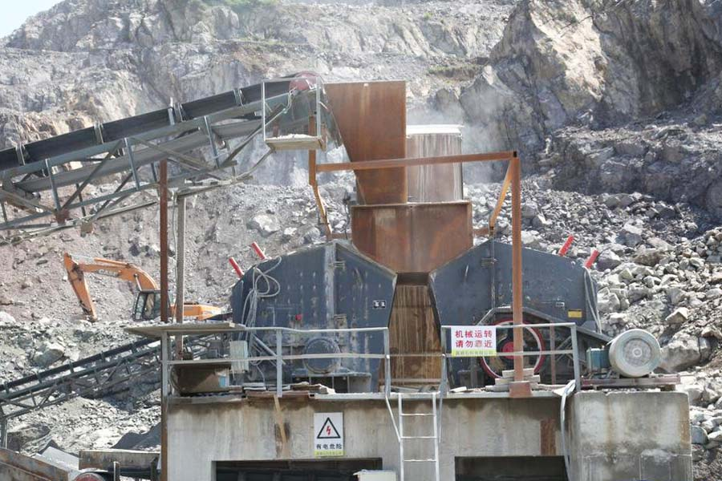

Construction waste crushing production line

Mobile construction waste crushing station for urban construction waste crushing.
small stone crusher machine
Sand making equipment, also known as impact crusher, used for sand production line, stone production line. Can crushing soft or medium hard and extremely hard materials. You can also shaping the material for processing. We know that the stone is different, suitable sand is different, with the continuous development of machinery industry, more and more types of sand, "match" is very important to select a suitable sand not only energy saving , increase production can also make the machine last longer, according to the processing material then how to choose a suitable Sand?

One, two common sand way
1, "stone at stone" Sand
"Stone at stone" crushing chamber, the main use of the material lining to reduce wear and crushing chamber ribs ribs can be removed or installed as required. Installation of reinforcement rib can improve product material situation. Removing the ribs can reduce the excessive accumulation of materials, reinforcement rib excessive wear can be replaced. Stone formed from the lining of formula working parts, the machine itself from wear and tear, stone lining protects the device from crushing cavity, and the material itself is broken. Stone lining at work are constantly broken.
"Stone at stone" applies to the above hard abrasive material crushing large, such as basalt. Crushing process emitted from the rejection wheel material and lining material impact occur without direct contact with the equipment metal components, reducing iron loss, thus reducing maintenance time. It applies to material crushing and construction aggregate shaping.
2, "stone blacksmith" Sand
"Stone blacksmith" crushing chamber, the impact liner installation is the key to design, make the impact surface normal direction perpendicular to stone when thrown from the inner rotor. Rotating out of the stone impact crusher surrounding steel liner plate, steel liner plate due to the absorption of energy to be much less than stone from the lining, so the effect is much larger than the broken stone blacksmith stone rock crushing. Sand stone blacksmith multistage rotor structure, increase the probability of collisions per unit time of material, improve the sand ratio, excellent gradation, fineness modulus is good, the production of high quality aggregate cube.
Second, we have to break before the sand
We know that the raw material before entering the sand are first broken, feeder evenly to the coarse material crusher broken, rough broken material after feeding fine jaw crusher crushing again, after crushing meet Sand stone pieces of the feed into the crusher was carried sand.
In the thick broken in to choose according to different processing materials, equipment, easily broken material hardness is relatively low, such as limestone, using a jaw crusher can have a good crushing effect; however, if a customer's processed materials are granite, marble, Basalt crushing high hardness, high silicon content, etc., you can not just use the jaw crusher, impact crusher for crushing process, so we should use the jaw crusher (or a crusher) + efficient cone configuration process crusher to crush.
Sand breaking equipment does not necessarily want the best, but be sure to buy their own, so that they can make the best use, when buying sand making equipment, materials must be combined with material selection, processing equipment for the sand on the materials.
Leave Me A Message, Now
If you have any questions regarding equipment prices, production line configuration or other problems, you can send a message to us, we will contact you soon.